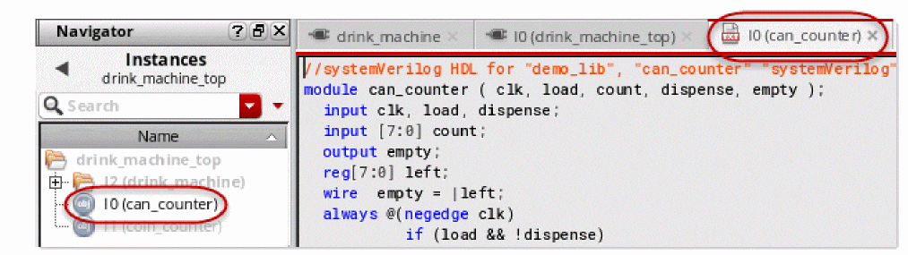

2
Working With Text Cellviews
Virtuoso Text Editor provides an environment to work with text cellviews. For an overview of this editor, see Chapter 1, “Introduction.”
This chapter includes the following topics on working with text cellviews:
- Creating Cellviews
- Editing Text Cellviews
- Generating the Databases of Text Cellviews
- Viewing the File Parse Log
- Navigating a Design Hierarchy Containing Text Cellviews
Creating Cellviews
Virtuoso Text Editor lets you create new text cellviews. This application also lets you create a cellview using an existing cellview as the source. The source and new cellviews can be of any type, such as text, schematic, or symbol.
In addition to Virtuoso Text Editor, Virtuoso provides various other tools to create digital and analog text cellviews. For example, Virtuoso Verilog In lets you import modules in an external Verilog file as text cellviews in a Virtuoso library. Other such import tools include Virtuoso VHDL Import for VHDL files and Virtuoso Spice In for CDL, HSpice, Spectre, and SPICE netlists. You can continue to use these tools to create text cellviews, while using Virtuoso Text Editor to edit the text cellviews. For details on these import tools, see the following guides:
- Verilog In for Virtuoso Design Environment User Guide and Reference
- VHDL In for Virtuoso Design Environment User Guide and Reference
- Design Data Translator's Reference
You can also use the command cdsTextTo5x to import Verilog, SystemVerilog, and VHDL text files into the Virtuoso design environment. For details, see
This section describes the creation of cellviews using Virtuoso Text Editor. It includes the following topics:
Creating a Text Cellview
There are several ways to initiate the creation of a new text cellview, as described in “Launching Virtuoso Text Editor”. The following figure illustrates how you initiate the text cellview creation from Virtuoso Library Manager.
-
Open the New File form.
You can open this form from Virtuoso CIW, Virtuoso Library Manager, and other Virtuoso tools. For details, see “Launching Virtuoso Text Editor”.
To open the New File form from Virtuoso Text Editor, choose File — New. - Do the following:
-
Click OK.
A new blank cellview opens in Virtuoso Text Editor and the directory structure of the cellview is created in the specified library.
Edit and save the text cellview. When you close the new text cellview, Virtuoso Text Editor prompts you to save the symbol of the cellview.
subcktHeaderAnalyzer parser by setting the cellHeaderAnalyzer .cdsenv variable to t. subcktHeaderAnalyzer checks excessive memory consumption by importing only the interface information of DSPF, such as, subckt name and terminals.Creating a Cellview from an Existing Cellview
Using Virtuoso Text Editor, you can create a cellview using another cellview as a source. For example, you can create a symbol cellview from a Verilog text cellview.
To create a cellview from an existing cellview, you specify the source library, cell, and view and the destination type and view. The destination cellview is created in the same source library and cell. Depending on the destination cellview type, you can provide additional information. For example, to create a symbol cellview from a Verilog cellview, you can choose to specify additional information, such as the left, right, top, and bottom pins.
- If the destination cellview already exists, the application prompts you to replace that cellview or cancel the operation. If the symbol of a text cellview does not exist, Virtuoso Text Editor prompts you to generate it when you close that text cellview.
-
When creating a cellview from an existing cellview, the
pc.dbfiles may be overwritten. To prevent these files from being overwritten, set thevmsUpdatePcdbflag tonil. This flag is set totby default. - The creation of a cellview from a cellview is useful for various design approaches. For example, you can create a symbol view for a Verilog digital top-level cellview. You can then instantiate this symbol in the top-most schematic design. When you close a text cellview that does not have a corresponding symbol view, Virtuoso Text Editor prompts you to save the symbol of the cellview.
- The feature to create a new cellview from another cellview in Virtuoso Text Editor is similar to the one in Virtuoso Schematic Editor. For details, see Automatically Creating a Cellview from Another Cellview in Virtuoso Schematic Editor L User Guide.
The following figure illustrates how you can create a cellview from a cellview.
To create a cellview from a text cellview:
-
Choose Create — Cellview From Cellview.
The Cellview From Cellview form appears. -
Specify the source and destination cellviews and options. The library, cell, and view of the currently opened text cellview appear in the respective fields, which you can change. For this, click Browse and choose the library, cell, and view from Library Browser.
-
Click OK or Apply.
If you selected Edit Options and the destination cellview has additional edit options, the appropriate form with those options appears. For example, if you chose to create a symbol view and have selected Edit Options, the Symbol Generation Options form appears when you click OK.
If the form for additional edit options appears, specify the required options and click OK.
The destination cellview is created using the data in the source cellview.
For VHDL views, you can also create an entity view from the architecture when symbol view is present. For this, set the vhdlCreateEntityFromArch SKILL flag to t.
Additionally, if Display Cellview was selected, the new cellview opens in the appropriate editor. You can also access this cellview from Virtuoso Library Manager.
Editing Text Cellviews
This section described the following topics:
- Switching Between Edit Mode and Read-Only Mode
- Checking Syntax
- Showing Line Numbers and Going to a Line Number
- Editing a Text Cellview File in an External Editor
- Checking Pins
- Using Other Editing Features
Switching Between Edit Mode and Read-Only Mode
You can edit a text cellview opened in Virtuoso Text Editor in edit mode. You can switch the text cellview mode between read-only and edit. The default background color of the content indicates the mode, as described in the following table.
| Default Background Color | Description |
|---|---|
You can change the default background color using the environment variables inScopeReadBGColor and inScopeWriteBGColor. For details, see Appendix B, “Environment Variables.”
To switch between read-only and edit modes:
Checking Syntax
After editing a text cellview, ensure that there are no syntax errors. If the text cellview has syntax errors, operations like file parsing and database generation fail.
Virtuoso Text Editor lets you check syntax errors in the text cellview opened in edit or read-only mode. The editor highlights the syntax errors. When you place the cursor over a syntax error, the error description appears as a tool tip.
The following figure provides an example of checking a text cellview for syntax errors.
To check for syntax errors in the text cellview opened in Virtuoso Text Editor:
The syntax errors get highlighted.
|
Tip: |
|
Showing Line Numbers and Going to a Line Number
You can view the line numbers of the text cellview file opened in Virtuoso Text Editor. You can also go to a specific line number. This feature is useful if the file is large and you want to go to a specific line number.
To show or hide the line numbers:
If the line numbers are hidden, they become visible.
You can configure Virtuoso Text Editor to display the line number by default using the showLineNumbersInSideBar environment variable. For details, see showLineNumbersInSideBar.
The following figure illustrates how you go to a line number.
The cursor is placed in the beginning of the specified line number and that line is highlighted.
- You can go to a specific line number, even if the line numbers are hidden..
-
The bottom-right corner of the Virtuoso Text Editor window displays the current line number and character position. For example, if you place the cursor in the begining of the text cellview, the bottom-right corner displays
L1 C1. - You can retrieve and set the character position of the cursor in the text cellview using the APIs teGetCursorPosition and teSetCursor.
Editing a Text Cellview File in an External Editor
From Virtuoso Text Editor, you can open a text cellview file in an external editor, like the vi editor. You can set the external editor through the shell variable EDITOR or the SKILL variable editor.
When you open the file in the external editor, that file becomes read-only in Virtuoso Text Editor. After you edit and close the file in the external editor, Virtuoso Text Editor prompts you to reload the file. You can then edit that file in Virtuoso Text Editor.
When you edit, save, and close the file in the external editor, the file is parsed. You can view the parser messages in Virtuoso CIW. If the parsing fails, a message appears, prompting you to view the parse error log and correct the errors.
The following figure illustrates how you open a text cellview file in the external editor.
To open the displayed text cellview file in an external editor:
The file becomes read-only in Virtuoso Text Editor and opens in the external editor.
- If you choose to open a read-only file in the external text editor, the application confirms the action.
- If the file has unsaved changes, the application prompts you to save them before opening the file in the external editor.
You can configure Virtuoso to always open text cellviews in the external editor for editing. For this, use the useExternalEditor environment variable, or the Text Editor Options Form. To always open text cellviews in an external editor, select the option, select the option Always Edit in External Editor in the Text Editor Options Form and set the SKILL variable hdlReadOnlyModeEditorCommand to the external editor or viewer.
For details on the SKILL variables hdlReadOnlyModeEditorCommand and editor, see
Checking Pins
You can check the name, order, and number of ports in the different views of the current cell. This feature is useful for text cellview files that connect terminals of instances sequentially. Virtuoso Text Editor also checks the ports when it extracts the database of the text cellview.
To check the ports in all the views parallel to the current text cellview:
The results of the port checks appear in Virtuoso CIW. The application checks ports in the different views of the cell. If any discrepancies are found, the Port Mismatch form appears. This form lists the views with mismatching ports, along with the issues, and recommended corrective actions.
disablePortOrderPopup and disablePortOrderCheck. For details, see Resolving Pin Mismatch in Virtuoso Schematic Editor L User Guide.Using Other Editing Features
You can use the following features to edit the text cellview opened in Virtuoso Text Editor:
Use the Edit menu and Edit toolbar to perform these edit operations. For details on the menu bar and toolbars, see “Understanding the Graphical User Interface”.
Generating the Databases of Text Cellviews
Virtuoso Text Editor creates the database of instances, nets, and pins in a text cellview when you save and close the text cellview file. You can also manually create or update the database of a text cellview opened in edit or read-only mode.
Before generating the database of a text cellview, Virtuoso Text Editor checks the syntax in the file. To generate the database of a text cellview, Virtuoso Text Editor uses the appropriate parser, depending on the cellview HDL file. For example, to parse a Verilog, Verilog-AMS, or SystemVerilog file, the editor uses the Native Code Verilog compiler (ncvlog). For a VHDL file, the editor uses the Native Code VHDL compiler (ncvhdl). Similarly, the editor uses different parsers for different types of HDLs. The parser checks the syntax, design, connectivity, and masters. If the checks pass, it creates and stores the database information in the netlist.oa and data.dm files within the directory structure of the text cellview.
If the application encounters file parse errors, the database is not generated. In this case, you can view the log of the file parse operation to investigate the errors. For details, see “Viewing the File Parse Log”.
It is possible that some instances in a text cellview are not bound. In such cases, Virtuoso Text Editor indicates the issues in Virtuoso CIW. The following report is an example of how instance binding information appears in Virtuoso CIW. The first four instances mentioned in the report are not bound to any cellview.
If there are unbound instances and the design flow requires you to correct such issues, perform corrective actions and regenerate the database. For example, if the design flow requires netlist generation, the unbound instance must be corrected to avoid issues.
After generating the database, Virtuoso Text Editor checks for any mismatch in the ports across different views of the cell.
To generate the database of the text cellview opened in Virtuoso Text Editor manually, do one of the following:
If you edit the text cellview and close it without regenerating the database, the application checks and parses the file, and generates the database automatically.
Viewing the File Parse Log
Virtuoso Text Editor uses the appropriate parser to parse the file of a text cellview to perform operations, such as generating the cellview database. When the parser processes a file, it maintains a log. You can view this log for details. For example, you can view the log to investigate parse errors.
In addition to information about any errors, the parse log of a text cellview file provides additional information, such as:
- The parser name and version.
- The name and path of the file that was parsed.
- The start time and the end time of the file parsing operation.
- The command-line options used for parsing the file.
The following figure illustrates how you can view the log of a file parsing operation in Virtuoso Text Editor.
To view the file parse log of the currently opened text cellview:
The Parse Log File window appears with the log.
Navigating a Design Hierarchy Containing Text Cellviews
You can instantiate a symbol of a text cellview in a schematic view. You can then descend to this text cellview from the schematic view. The following figure illustrates how you navigate a design containing text cellviews. In this example of the drink_machine design, the drink_machine_top schematic view contains the symbol of the SystemVerilog text cellview can_counter. The figure illustrates how you can descend to can_counter instance I0 from drink_machine_top.
To descend to a text cellview from a schematic:
- Select the text cellview symbol instantiated in the schematic view.
- Do one of the following to open the Descend form:
- Specify the mode and location to open the text cellview.
- Press OK.
The text cellview opens. You can open multiple text, schematic, and layout views in different tabs of the same window. You can also open them in the same tab or in a different window.
The Navigator assistant shows the design hierarchy, including the text cellviews.
To access the Navigator assistant, do one of the following:
- Choose Windows — Assistants — Navigator.
-
Right-click the menu bar and select Assistants — Navigator.
The Navigator assistant is available in Virtuoso Text Editor, Virtuoso Schematic Editor L and XL, and Virtuoso Layout Suite L. For details, see The Navigator Assistant in Virtuoso Schematic Editor L User Guide.
-
You can view the design hierarchy in the Navigator assistant. The highlighted entry in the assistant indicates the currently displayed view. The other entries appear in gray text.
 - To navigate the design, use any of the following interfaces:
- To navigate a design using the Navigator assistant:
Return to top